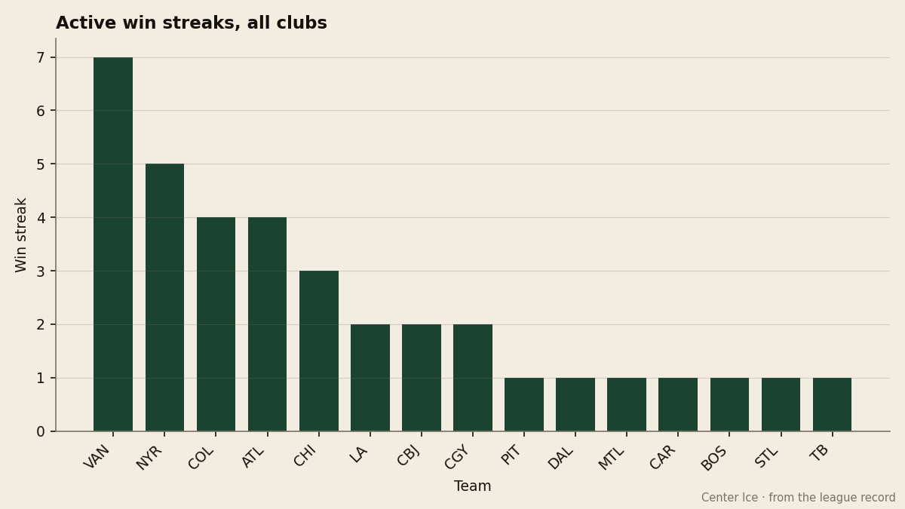
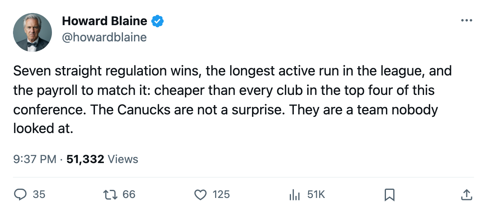
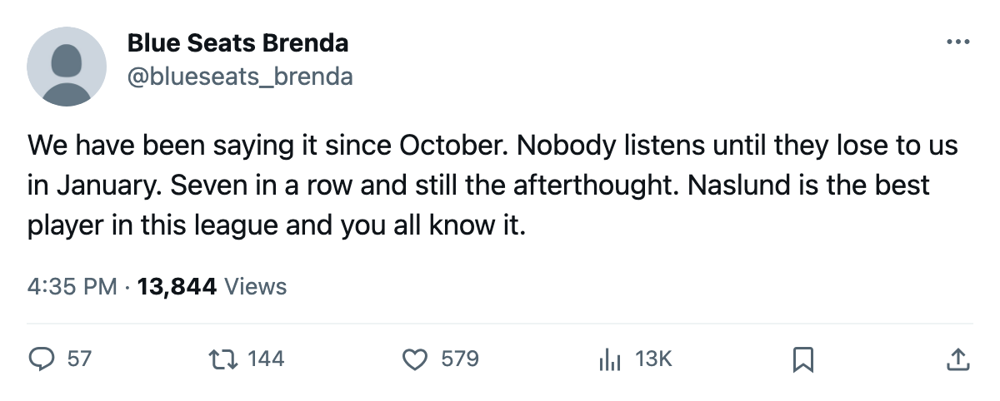

Seven Straight on $46.36M: Vancouver Has the Longest Active Run in Hockey, and Its Payroll Is the Second-Cheapest in the League
The Canucks lead the Hart race, sit 4 points above the Western Conference's playoff line, and cost $0.97M per point, the same rate as the conference-leading Stars.
 Howard BlaineSenior writer, The Blaine Rankings · The Hockey Gazette
Howard BlaineSenior writer, The Blaine Rankings · The Hockey Gazette
 Vancouver Canucks has won 7 games in a row, the longest active streak in hockey, and this desk has not written a word about the club all season. The Canucks sit 6th in the Western Conference with 48 points, 4 above 8th-place
Vancouver Canucks has won 7 games in a row, the longest active streak in hockey, and this desk has not written a word about the club all season. The Canucks sit 6th in the Western Conference with 48 points, 4 above 8th-place  Detroit Red Wings, and they carry the second-lowest payroll in the league at $46.36M. Their cost per point is $0.97M, tied with
Detroit Red Wings, and they carry the second-lowest payroll in the league at $46.36M. Their cost per point is $0.97M, tied with  Dallas Stars for the best in the sport.
Dallas Stars for the best in the sport.
 Markus Naslund91 leads the league with 61 points in 40 games, a pace of 125 over a full season. He turns 33 in July, earns $4.40M with 1 year left on his contract, and carries a Book grade of 91. Last spring he won the Hart Trophy with 138 points. Nobody in this league is closer to matching that than the 32-year-old from Ornskoldsvik who has been a Vancouver player since before this record opened.
Markus Naslund91 leads the league with 61 points in 40 games, a pace of 125 over a full season. He turns 33 in July, earns $4.40M with 1 year left on his contract, and carries a Book grade of 91. Last spring he won the Hart Trophy with 138 points. Nobody in this league is closer to matching that than the 32-year-old from Ornskoldsvik who has been a Vancouver player since before this record opened.

The streak itself runs from 2005-12-21 through 2006-01-04. The opponents:  Edmonton Oilers twice,
Edmonton Oilers twice,  Colorado Avalanche,
Colorado Avalanche,  Mighty Ducks of Anaheim,
Mighty Ducks of Anaheim,  Toronto Maple Leafs,
Toronto Maple Leafs,  Montreal Canadiens and
Montreal Canadiens and  Florida Panthers. All seven came in regulation. The goal differential tells the story better than the schedule does. In the 5 games before the streak, Vancouver Canucks scored 8 and allowed 14, a margin of minus 6. In the 7 since, the Canucks have scored 22 and allowed 12, a margin of plus 10. That is a 16-goal swing in the differential over 12 games, and it has carried a club that sat below .500 into a conference playoff spot.
Florida Panthers. All seven came in regulation. The goal differential tells the story better than the schedule does. In the 5 games before the streak, Vancouver Canucks scored 8 and allowed 14, a margin of minus 6. In the 7 since, the Canucks have scored 22 and allowed 12, a margin of plus 10. That is a 16-goal swing in the differential over 12 games, and it has carried a club that sat below .500 into a conference playoff spot.
 Todd Bertuzzi93 has 55 points of his own, 33 of them goals, and his 93 overall grade is the highest on the roster.
Todd Bertuzzi93 has 55 points of his own, 33 of them goals, and his 93 overall grade is the highest on the roster.  Dan Cloutier90 is 20 and 12 with a 2.26 goals-against average and a save percentage of 0.880. Neither man is a household name in the papers that cover the big-market clubs, which is part of why Vancouver Canucks has lived below the radar all season despite the longest run in hockey.
Dan Cloutier90 is 20 and 12 with a 2.26 goals-against average and a save percentage of 0.880. Neither man is a household name in the papers that cover the big-market clubs, which is part of why Vancouver Canucks has lived below the radar all season despite the longest run in hockey.
The payroll that nobody wrote about
At $46.36M, Vancouver Canucks carries the fourth-lowest payroll in the league. Only Edmonton Oilers ($42.95M),  Atlanta Thrashers ($40.34M) and
Atlanta Thrashers ($40.34M) and  Pittsburgh Penguins ($48.92M) are cheaper among clubs that have more points than losses, and Pittsburgh Penguins is the closest comparison: the Penguins spend $48.92M for 52 points at $0.94M a point, and Vancouver Canucks spends $46.36M for 48 points at $0.97M a point. The gap between 3rd in cost efficiency and 2nd is three hundredths of a million per point and one seat in the conference table.
Pittsburgh Penguins ($48.92M) are cheaper among clubs that have more points than losses, and Pittsburgh Penguins is the closest comparison: the Penguins spend $48.92M for 52 points at $0.94M a point, and Vancouver Canucks spends $46.36M for 48 points at $0.97M a point. The gap between 3rd in cost efficiency and 2nd is three hundredths of a million per point and one seat in the conference table.
The league's top three in cost efficiency: Pittsburgh Penguins at $0.94M per point, Vancouver Canucks and Dallas Stars at $0.97M. Dallas Stars has 60 points from a $58.02M payroll, the conference lead. Vancouver Canucks needs 12 more points to match that total and has 42 games left. Whether the Canucks can hold the pace is the question the Northwest division poses for the rest of January and February.
The race, four points deep
The Western Conference playoff line is thin. Detroit Red Wings holds 8th with 44 points in 40 games, the same number of games Vancouver Canucks has played.  Minnesota Wild sits 9th with 44 points but has played 42 games, meaning the Wild have 2 fewer contests left to make ground. Mighty Ducks of Anaheim is 10th at 43 points in 40. The gap between 6th and 10th is 5 points across 5 clubs. That is a compressed race, and 7 wins in a row moves a club 14 points on its own, which is more than the entire spread between the top and bottom of that cluster.
Minnesota Wild sits 9th with 44 points but has played 42 games, meaning the Wild have 2 fewer contests left to make ground. Mighty Ducks of Anaheim is 10th at 43 points in 40. The gap between 6th and 10th is 5 points across 5 clubs. That is a compressed race, and 7 wins in a row moves a club 14 points on its own, which is more than the entire spread between the top and bottom of that cluster.
Naslund does not appear on the injured list. He has played all 40 games, a streak that has held since opening night. His Development Index reads flat at 0 from a base grade of 92, which means the Bureau sees no upward movement: what is there now is what the man has been, and at 32 with the youngest player on his top line already 21 years old, what is there now is the window.
The next test comes tonight at home against  Ottawa Senators, a club that has lost 4 straight and sits 12th in the Eastern Conference. The season series between Vancouver Canucks and the Senators has not opened yet. After that, the Canucks take on
Ottawa Senators, a club that has lost 4 straight and sits 12th in the Eastern Conference. The season series between Vancouver Canucks and the Senators has not opened yet. After that, the Canucks take on  Calgary Flames on 2006-01-14, a divisional rival they have beaten in 3 of 4 meetings this season, all of them by a single goal.
Calgary Flames on 2006-01-14, a divisional rival they have beaten in 3 of 4 meetings this season, all of them by a single goal.
The standings at Christmas are the standings in April, this desk has argued all season. Vancouver Canucks enters January 8th in a playoff position, on a 7-game run, with the league's second-best scoring player and a payroll of $46.36M against the $63.16M that Detroit Red Wings spends to sit in 8th. If that holds through March, this desk owes the Canucks a column in April as well as the one it is writing now.

